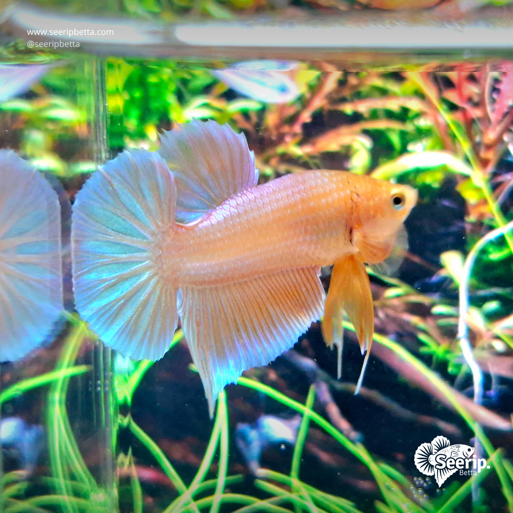

Ikan cupang hias, dirawat sepenuh hati
Sirip indah, warna memukau, langsung dari kolam kami.
Seerip Betta adalah usaha kecil yang membudidayakan dan memilih ikan cupang hias satu per satu. Tanya stok, lihat foto/video ikan, dan pesan langsung lewat WhatsApp.

Koleksi
Jenis cupang yang biasa tersedia
Stok berganti setiap minggu. Tanyakan via WhatsApp untuk foto/video ikan yang tersedia beserta harganya.
-
Halfmoon
Ekor mengembang hingga 180° seperti setengah bulan. Favorit untuk pajangan dan kontes.
-
Plakat
Sirip pendek, badan kekar, dan gerak lincah. Cocok untuk pemula karena perawatannya mudah.
-
Crowntail
Ujung sirip bergerigi seperti mahkota. Tampil dramatis saat mengembang.
-
Koi
Motif belang mirip ikan koi. Setiap ekor punya pola yang berbeda.
-
Giant
Ukuran badan lebih besar dari cupang biasa, terlihat gagah di akuarium.
-
Cari jenis lain?
Sebutkan jenis atau warna yang kamu mau, nanti kami bantu carikan.
Tanya Stok
Kenapa Seerip Betta
Usaha kecil, perhatian besar
Dipilih satu per satu
Setiap ikan dicek kesehatan, warna, dan bentuk siripnya sebelum ditawarkan.
Foto & video asli
Yang kamu lihat adalah ikan yang akan kamu terima, bukan gambar contoh.
Dikemas dengan aman
Kemasan disesuaikan agar ikan tetap nyaman selama perjalanan.
Bebas tanya-tanya
Baru pertama pelihara cupang? Kami bantu jelaskan cara merawatnya.
Testimoni
Kata pelanggan kami
Bagian ini masih kosong. Isi dengan ulasan asli dari pelanggan (dengan izin mereka).
[Tulis testimoni pelanggan asli di sini]
[Tulis testimoni pelanggan asli di sini]
[Tulis testimoni pelanggan asli di sini]
Sudah menemukan cupang idaman?
Kirim pesan ke kami. Sebutkan jenis atau warna yang kamu suka, nanti kami kirimkan foto dan video ikan yang tersedia.
Chat di WhatsApp